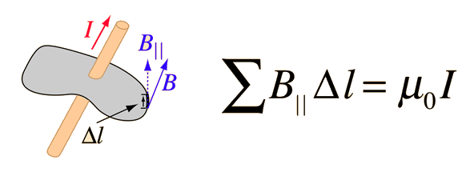
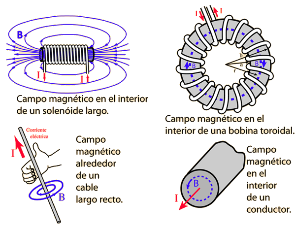

El campo magnético en el espacio alrededor de una corriente eléctrica, es proporcional a la corriente eléctrica que constituye su fuente, de la misma forma que el campo eléctrico en el espacio alrededor de una carga, es proporcional a esa carga que constituye su fuente. La ley de Ampere establece que para cualquier trayecto de bucle cerrado, la suma de los elementos de longitud multiplicado por el campo magnético en la dirección de esos elementos de longitud, es igual a la permeabilidad multiplicada por la corriente eléctrica encerrada en ese bucle.

En el caso eléctrico, la relación del campo con la fuente está cuantificada en la ley de Gauss la cual, constituye una poderosa herramienta para el cálculo de los campos eléctricos
